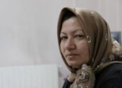

پذيرش > اخبار > پرونده سکینه محمدی، همچنان نامختوم


 پرونده سکینه محمدی، همچنان نامختوم پرونده سکینه محمدی، همچنان نامختوم
8 مرداد 1391 - - نسخه قابل چاپ
رادیو زمانه: پرونده سکینه محمدی آشتیانی، زنی که در سال ۱۳۸۵ در دادگاهی در ایران به اتهام روابط غیر مشروع و مشارکت در قتل همسرش به سنگسار محکوم شده بود، همچنان به عنوان یکی از موارد نقض حقوق بشر در ایران شناخته میشود و سمبلی برای مبارزه با مجازات سنگسار به شمار میرود.
او که سالهاست در زندان به سر میبرد، با تلاش مدافعان حقوق بشر در ایران و سراسر جهان، تبدیل به یک چهره مشهور شده و پرونده او در سطح بینالمللی نیز جایگاه ویژهای پیدا کرده است. حکومت ایران، چندی پیش دو خبرنگار آلمانی را به همراه پسر خانم آشتیانی بازداشت کرد که البته چندی بعد به دلیل فشارهای بینالمللی مجبور به آزادی آنها شد.
واکنشها نسبت به مجازات سنگسار سکینه محمدی به آنجا رسید که رئیس جمهور برزیل برای دادن پناهندگی به او اعلام آمادگی کرد و بیش از هشتاد نفر از هنرمندان و شخصیتهای سیاسی، فرهنگی، هنری و علمی جهان در نامهای سرگشاده که در روزنامه تایمز لندن چاپ شد، از رهبر جمهوری اسلامی و محمود احمدینژاد، رئیس جمهور ایران خواستند که خانم آشتیانی را از زندان آزاد کنند.
اکنون، سازمان عفو بینالملل در بیانیهای که روز ۲۴ جولای صادر کرده است، بار دیگر به وضعیت سکینه محمدی آشتیانی و وکیل او جاوید هوتن کیان اشاره کرده که همچنان بلاتکلیف در زندان به سر میبرند.
بلاتکلیفی چندساله
دو سال بعد از بالا گرفتن اعتراضهای جهانی نسبت به مجازات سنگسار سکینه محمدی آشتیانی، امروز او همچنان در آذربایجان زندانی است. وکیل او جاوید هوتن کیان نیز به اتهام دفاع از او همچنان در زندانی به سر میبرد.
در بیانیه عفو بینالملل آمده است: "اگر سکینه محمدی دیگر زیر حکم سنگسار نیست، مقامات قضائی ایران باید این موضوع را به شکل رسمی اعلام کنند و وضعیت فعلی او را نیز از نظر میزان باقی مانده مجازات زندان مشخص کنند."
گفته میشود آقای جاوید هوتن کیان در زندان تحت شکنجه است. گزارشهای تائید نشده از ایران، حاکی از این است که مقامات قضایی ایران قصد ندارند حکم سنگسار را برای سکینه محمدی اجرا کنند. این گزارشها تاکید میکنند که وضعیت او باید هرچه سریعتر مشخص شود.
بر اساس گزارشی که روز ۲۵ ژوئن در روزنامه تایمز، چاپ لندن منتشر شده است، محمد مصطفایی، یکی از وکلای سابق سکینه محمدی گفته است که شنیده مجازات سنگسار خانم محمدی برداشته شده است و بنابراین او باید آزاد شود.
هرچند سازمان عفو بینالملل این اخبار را مثبت میداند، اما در بیانیه خود تاکید میکند که نسبت به رسمی بودن این خبرها اطمینانی ندارد. در بیانیه عفو بینالملل آمده است: "اگر سکینه محمدی دیگر زیر حکم سنگسار نیست، مقامات قضائی ایران باید این موضوع را به شکل رسمی اعلام کنند و وضعیت فعلی او را نیز از نظر میزان باقی مانده مجازات زندان مشخص کنند."
بر اساس روند فعلی قضائی در ایران، فردی که به سنگسار محکوم شده است باید تا زمان اجرای حکم در بازداشت بماند، اما در مورد سکینه محمدی وضعیت مشخص نیست. اگر مجازات اعدام او برداشته نشده باشد، به این معناست که مجازات او هر زمانی میتواند انجام شود، چون حکم سنگسار او قبلاً به اجرای احکام فرستاده شده است. در این صورت، عفو بینالملل بار دیگر از مقامات قضائی ایران خواسته که این حکم را لغو کنند و سکینه محمدی را به هیچ روش دیگری نیز اعدام نکنند. بر اساس این بیانیه، عفو بینالملل سکینه محمدی را زندانی وجدان تلقی کرده و خواهان آزادی فوری او شده است.
وضعیت مبهم وکیل زندانی پرونده
پرونده سکینه محمدی آشتیانی، علاوه بر ماجراهایی که برای متهم آن ایجاد کرد، برای وکلایی که با آن درگیر بودند نیز مشکلساز شد. محمد مصطفایی، نخست وکیل سابق خانم محمدی، به دنبال فشارهای امنیتی مجبور به خروج از کشور شد و سپس وکیل دیگر او، جاوید هوتن کیان به زندان افتاد.
سازمان عفو بینالملل در بیانیه جدید خود، خواهان آزادی فوری و بی قید و شرط وکیل خانم محمدی، جاوید هوتن کیان نیز شده است که از اکتبر ۲۰۱۰ که به همراه پسر خانم محمدی و دو روزنامهنگار آلمانی دستگیر شده است، همچنان در زندان به سر میبرد.
گفته میشود که جاوید هوتن کیان به چهارسال زندان محکوم شده و همچنین برای مدت پنج سال از وکالت محروم شده است. اتهام او تبلیغات علیه نظام و تجمع و اقدام علیه امنیت ملی اعلام شده و علاوه بر این، ممکن است او به جاسوسی نیز متهم شود که در این صورت، این اتهام مجازات احتمالی اعدام را در پی خواهد داشت.
در نامهای که چندی پیش از آقای جاوید هوتن کیان منتشر شد، او از سوزانده شدن با سیگار، ضرب و شتم مکرر که منجر به شکسته شدن دندانهایش شده، خیس شدن با آب و سپس رها شدن در سرما خبر داده است. نقی محمودی، وکیل مدافع سابق جاوید هوتن کیان که در آگوست ۲۰۱۱ به خاطر مسائل امنیتی ایران را ترک کرده، گفته است که "هوتن کیان به شدت شکنجه شده، دندان و بینیاش شکسته شده بود".
آقای جاوید در نامه خود نوشته بود: "از روز دستگیریام تا به امروز، هر روز آرزوی مرگ کردهام ولی تا به حال به سراغم نیامده، ولی اداره اطلاعات و مسئولین زندان، در صدد کشتن تدریجی من هستند. هفت ماه است که به دستور اداره اطلاعات، مرا از بند مالی به بند متادون، انتقال دادهاند. صرف نظر از اینکه، این بند به معتادین مواد مخدر اختصاص دارد، همه زندانیان بند را از هرگونه حشر و نشر، مکالمه و حتی هم خرجی شدن با من، بر حذر داشتهاند و آنها را تهدید کردهاند که در غیر این صورت با مجازاتهای شدید انتظامی، تنبیه خواهند شد. فقط زندانیان سیاسی بند و افراد معدودی، جسته و گریخته و به صورت پنهانی با من در ارتباط هستند."
سازمان عفو بینالملل در بیانیه خود یک بار دیگر از مقامات ایران خواسته است تا تحقیقات سریع و مستقلی درباره ادعاهای مطرح شده درباره شکنجه آقای جاوید انجام دهند تا هرکس که مسبب این خشونتهاست، بر اساس استانداردهای جهانی به دست عدالت سپرده شود. همچنین، سازمان عفو بینالملل درخواست کرده که جاوید هوتن کیان بتواند فوراً با خانوادهاش تماس بگیرد و وکیلی به انتخاب خود برگزیند و به پزشک و خدمات پرشکی مناسب دسترسی داشته باشد.
ارسال به
بالاترین
،
توییتر
،
فریندفید
،
فیسبوک
در همين بخش :
 پروین ذبیحی برنده جایزه حقوق بشری سازمان غيردولتى اتريشى سودويند شد پروین ذبیحی برنده جایزه حقوق بشری سازمان غيردولتى اتريشى سودويند شد
پخش کارت پستال و بروشور در روز جهانی زن در تهران
تمدید زمان برای امضای بیانیهی جمعی از فعالان زن به مناسبت هشت مارس
مجوزی که در نطفه خفه شد
بیش از 2000 امضا در اعتراض به تبعیض های آموزشی به مجلس تحویل داده شد
ديگر بخش ها :
طرح یک میلیون امضا
|
مقالات
|
سایت نوشته ها
|
اخبار
|
گزارش كمپين
|
گفت و گو
|
علیه سکوت
|
كوچه به كوچه
|
نامه های شما
|
گزارش ویژه
|
گفتگو با اعضا
|
ویژه سالگرد کمپین
|
تصویر برابری
|
دل آرام علی
|
تریبون
|
مقالات
|
تاریخ شفاهی
|
خارج از چارچوب
|
کتابخانه
|
درباره کمپین
|
کمپین در شهرها
|
کمپین در بند
|
صدای تغییر
|
ویژه 22 خرداد
|
لایحه حمایت از خانواده
|
گالری
|
عشا مومنی
|
امیر یعقوبعلی
|
خدیجه مقدم
|
راحله عسگری زاده و نسیم خسروی
|
پروین اردلان،جلوه جواهری، مریم حسین خواه، ناهید کشاورز
|
زینب پیغمبرزاده
|
سعیده امین، سارا ایمانیان، محبوبه حسین زاده، ناهید کشاورز و همایون نامی
|
احترام شادفر
|
نسیم سرابندی زاده،فاطمه دهدشتی
|
وبلاگ مهمان
|
پرونده خرم آباد
|
دستگیری ها
|
مریم مالک
|
پرستو اللهیاری
|
مهرنوش اعتمادی
|
سمیه رشیدی
|
Other Languages
|
همراهان
|
«فراخوان کمپین ده روز با بهاره هدایت»
| English
|